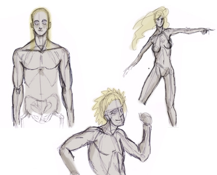

Rŷn Lyn (Gente de luna), también conocidos como Runalún.
Pueblo nacido de Lynlle en la meseta de Maralyn.
Esta gente ayudó poblar el mundo durante la Primera edad con criaturas y plantas nuevas creadas con la magia que poseían.
Esta gente era hábil en el uso de la magia y se dice que podían comunicarse sin movel los labios, y que podían ver sucesos futuros.
Este pueblo poseía la sabiduría de la luna enseñada por Lynlle.
Los primeros Runalún podían escuchar el eco de la canción de la Creación del mundo, lo que les permitía conocer sucesos del futuro de Ânmer y guardarlas en forma de profecías.
Sin duda la profecía más famosa fue la de la ruptura de Ânmer por una sombra oscura desde el norte. Esta profecía se volvió realidad con la Batalla del Monte Ureẅa y la Creación de las Montañas Negras.
La gente de Maralyn tenía la piel blanca, cabello blanco, y ojos azules o violetas.
Todavía existe en el norte descendientes de ellos.
Cada cierta generaciones, un grupo de individuos nacen albinos. Guardan ciertas características mágicas de sus antepasados, pero son sutiles.
